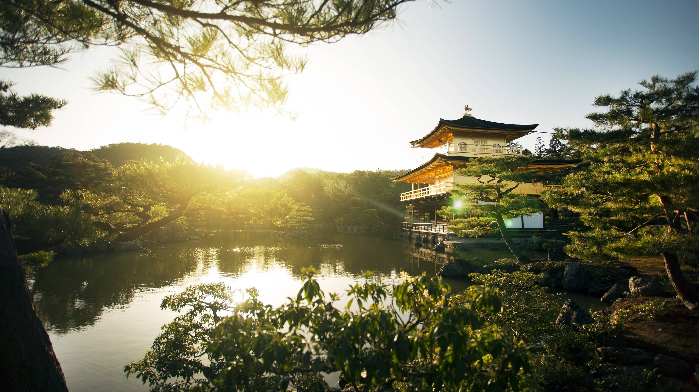
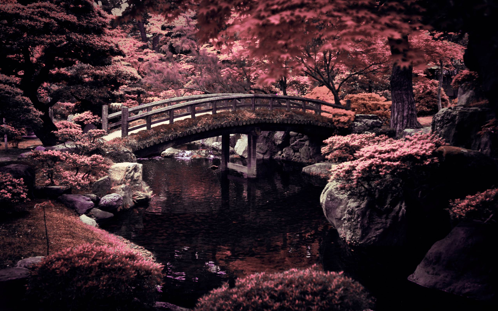
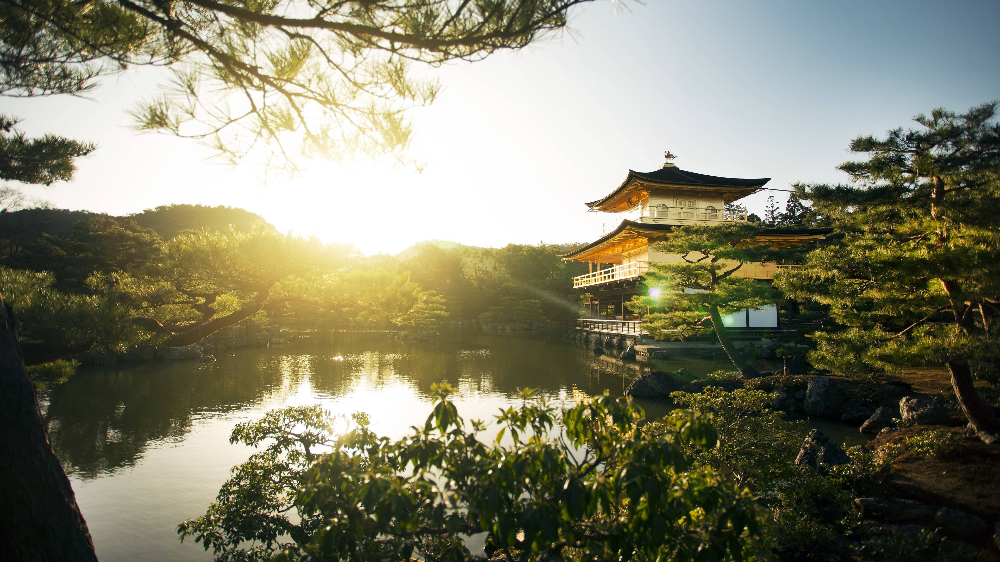
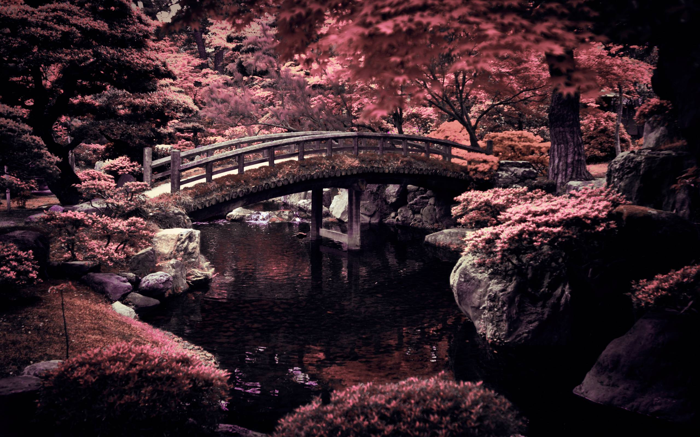

Kyoto
Kyoto, once the capital of Japan, is a city on the island of Honshu. It's famous for its numerous classical Buddhist temples, as well as gardens, imperial palaces, Shinto shrines and traditional wooden houses. Its also known for formal traditions such as kaiseki dining, consisting of multiple courses of precise dishes, and geisha, female entertainers often found in the Gion district.